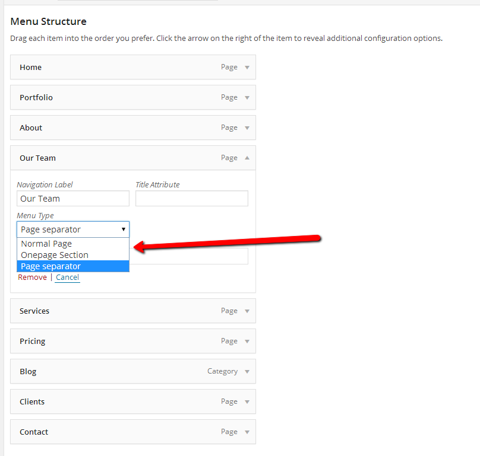

Basic steps to create a page as a section
In order to create a section (a section is a part from one page layout) in our theme you need to follow the basic steps, regardless of your page destination (section, separator, inner page) the steps are the same:
- Click on Pages > Add New
- Choose a name and a Page Template for your page and publish it
- Set the page destination (what you want the page to be from Wordpress Menu) - in our case you should set it as Normal Page
Menu Item Options
Under each menu item you have a drop down from where you can select the menu type like this
- Normal Page - this is a normal stand alone page
- Page Separator - this is section that will be displayed on main page but not on menu
- One Page Section - this section will be displayed in menu and on main page
